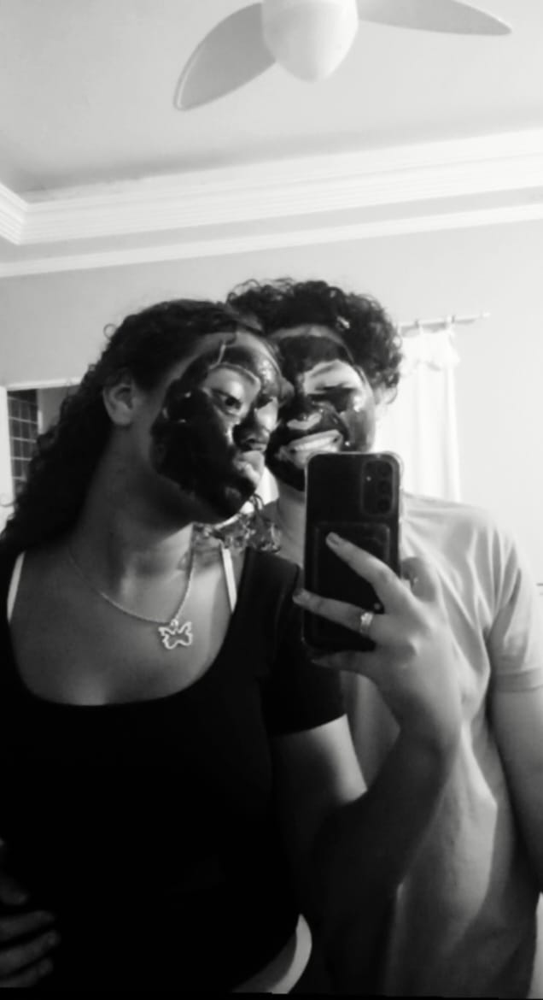
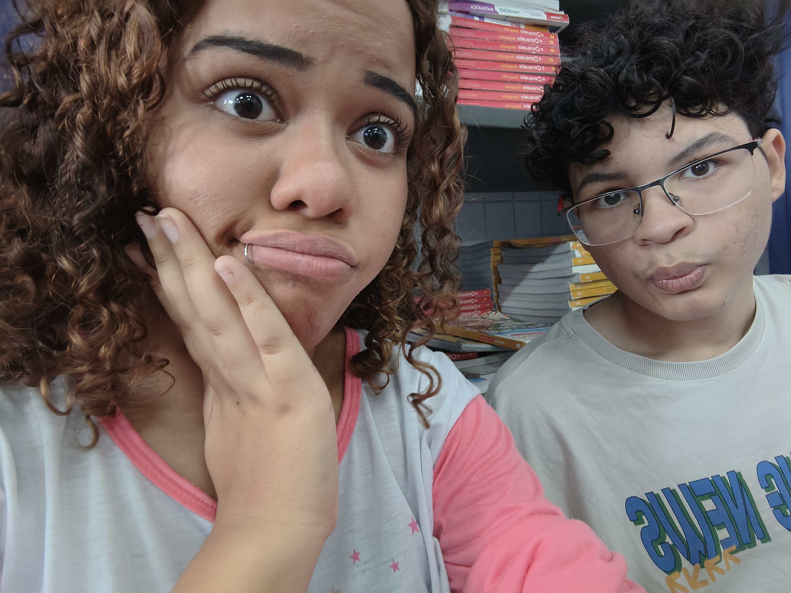
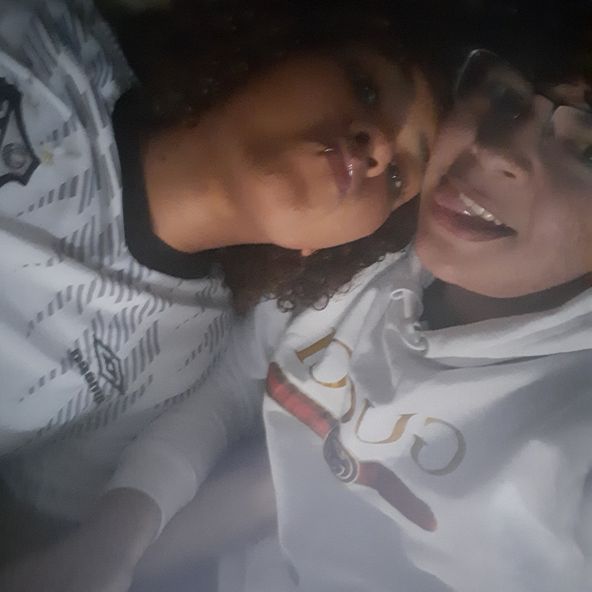
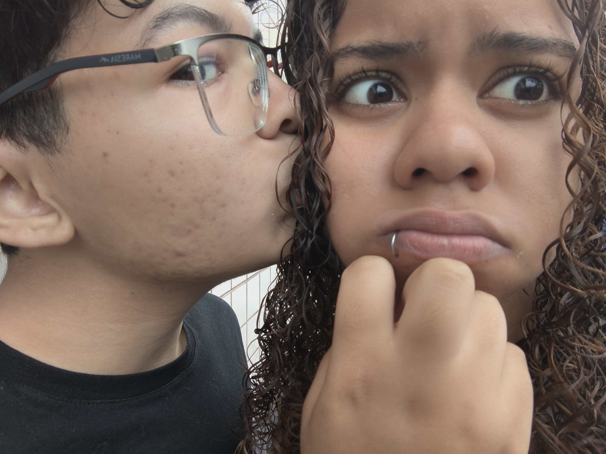

📸 Nosso pequeno universo
Alguns dos meus momentos favoritos são aqueles em que você está comigo.

Um momento que guardo no coração ❤️

Eu e você, do nosso jeitinho 💗

Mais uma lembrança nossa 🥹

Que venham muitos outros momentos 💞
💌 Uma carta do fundo do meu coração
Meu amor, feliz 6 meses para nós! ❤️🥹
Eu queria começar dizendo que talvez nem todas as palavras do mundo fossem suficientes para explicar o quanto você significa para mim. Mesmo assim, quero tentar, porque você merece saber o tamanho do carinho que tenho por você e o quanto esses seis meses representam na minha vida.
Hoje completamos seis meses de uma história que é nossa, uma história construída com conversas, risadas, carinho, saudade, momentos especiais e até dificuldades que nos ensinaram coisas sobre nós mesmos. E, quando penso em tudo isso, percebo que o mais bonito não é apenas o tempo que passou, mas todas as lembranças que construímos durante ele.
Antes de você, eu não sabia exatamente como tantas pequenas coisas poderiam ganhar um significado tão grande. Uma mensagem sua pode melhorar meu dia, uma conversa pode fazer o tempo passar voando e uma lembrança nossa pode me fazer sorrir mesmo quando estou longe de você. É incrível como alguém pode se tornar tão importante sem precisar fazer nada extraordinário: às vezes, basta ser quem é.
E eu gosto de você por ser você. Pelos seus jeitos, pelas suas manias, pelo seu sorriso, pela sua personalidade e por todas aquelas pequenas coisas que talvez você nem perceba, mas que fazem parte da pessoa por quem me apaixonei. Não quero que você pense que precisa ser perfeita para ser amada. Você pode ter dias bons e ruins, pode ficar triste, pode errar, pode mudar de ideia e pode ter seus momentos difíceis. Quero conhecer e respeitar a pessoa real que você é, não uma versão perfeita que ninguém consegue ser.
Nesses seis meses, você se tornou uma parte muito especial da minha história. Eu guardo com carinho as nossas conversas, as brincadeiras, as demonstrações de amor e até as pequenas coisas que podem parecer bobas para outras pessoas. Para mim, são lembranças que têm valor porque foram vividas com você.
Também sei que nem tudo é perfeito. Relacionamentos têm diferenças, mal-entendidos e dias em que precisamos respirar fundo, conversar e aprender a entender melhor o outro. Eu não quero que a nossa história seja baseada na ideia de que nunca vamos errar, mas na vontade de aprender, conversar com sinceridade, respeitar nossos sentimentos e cuidar um do outro. Quero que a gente tenha liberdade para falar sobre o que incomoda, sem medo de ser ouvido.
E, meu amor, preciso te pedir desculpas por uma coisa: sinto muito por não ter conseguido te dar um presente físico nesses seis meses. Eu queria poder te entregar algo especial, ver sua reação e guardar esse momento com você. Se eu pudesse, gostaria de preparar tudo do jeitinho que você merece.
Talvez esse presente não seja uma caixa com laço, flores entregues na sua mão ou alguma coisa que você possa segurar. É um pedacinho do meu tempo, da minha dedicação e dos meus sentimentos colocado aqui para você. Fiz isso pensando em você, imaginando você lendo cada palavra e querendo que sentisse o quanto é importante para mim.
E o presente físico? Quero tentar te entregar depois, mesmo que chegue atrasado. Não quero te prometer algo que dependa de condições que nem sempre controlo, mas quero que saiba que não deixei de me importar com essa data. A intenção de fazer algo especial por você continua aqui. Espero que, quando esse momento chegar, a gente possa transformar a espera em mais uma lembrança bonita.
Eu também quero que você saiba de uma coisa muito importante: quero estar ao seu lado não somente quando tudo estiver bem, quando estivermos felizes e quando estivermos rindo de qualquer besteira. Quero também poder te ouvir quando o dia for difícil, respeitar seu silêncio quando precisar de um tempo, te acolher quando estiver triste e conversar com você quando as coisas parecerem complicadas.
Não posso prometer que terei todas as respostas ou que conseguirei resolver todos os problemas. Sou humano, também tenho minhas limitações e ainda tenho muito a aprender. Mas posso procurar te ouvir com carinho, levar seus sentimentos a sério e fazer o meu melhor para que você nunca sinta que precisa fingir estar bem comigo. Você merece ser ouvida, respeitada e tratada com amor.
E tem uma coisa que preciso te dizer com todo o carinho do mundo: lembra daquilo que você me falou? Eu fiquei preocupado com você. Por favor, não faça aquilo que você me disse que estava pensando em fazer. Não quero que você se machuque nem que enfrente essa dor sozinha. Sua vida e seu bem-estar importam muito, independentemente de qualquer problema que esteja acontecendo agora.
Se as coisas estiverem pesadas demais, conversa comigo, com alguém da sua família ou com uma pessoa adulta em quem você confie. Você não precisa encontrar todas as respostas hoje, nem resolver tudo de uma vez. Podemos conversar sobre o que está acontecendo e procurar ajuda juntos. Eu quero que você fique bem de verdade, não apenas que diga que está bem para me tranquilizar.
Quero que você saiba também que não precisa carregar tudo sozinha para provar que é forte. Pedir ajuda não diminui ninguém. Você merece cuidado, apoio e pessoas que possam estar perto de você quando precisar.
Meu amor, se existe algo que desejo para os nossos próximos meses, é que a gente continue crescendo, aprendendo a conversar melhor, criando lembranças e descobrindo novas formas de demonstrar carinho. Quero comemorar suas conquistas, conhecer seus sonhos, ouvir suas histórias e participar dos momentos que você quiser compartilhar comigo.
Quero que tenhamos muitas fotos novas para colocar neste site, muitas datas para comemorar e muitas lembranças para olhar no futuro e dizer: "Olha tudo o que a gente viveu!". Não sei exatamente como será cada capítulo da nossa história, mas sei que quero tratar o nosso presente com cuidado e sinceridade.
Obrigado por esses seis meses, pelas lembranças, pelo carinho e por fazer parte da minha vida. Obrigado por cada conversa que me fez sorrir, por cada momento que se tornou especial e por todas as vezes em que pudemos compartilhar um pouquinho do nosso mundo.
Se eu pudesse te entregar uma coisa junto desta carta, seria a certeza de que você não precisa ser perfeita para ter valor. Você é uma pessoa com sentimentos, sonhos, qualidades e dificuldades, e merece carinho em todos esses momentos. Nunca se esqueça de cuidar de você também.
Feliz seis meses para nós, minha menina. ❤️ Que este seja mais um capítulo cheio de carinho, respeito, sinceridade e momentos felizes. E que, quando olharmos para trás, possamos sentir orgulho da forma como aprendemos a cuidar um do outro.
Eu te amo muito, meu amor. Mais do que consigo explicar nesta carta, mais do que cabe nesta tela e mais do que qualquer presente conseguiria dizer. Espero que você sinta, em cada palavra, o carinho com que preparei este pequeno presente para você.
Com todo o meu amor,
do seu namorado, que preparou cada detalhe
pensando em você. 💗
💖 Uma última coisinha...
Seis meses de história.
Milhares de sentimentos.
Muitas lembranças guardadas.
E ainda tantas coisas bonitas para viver.